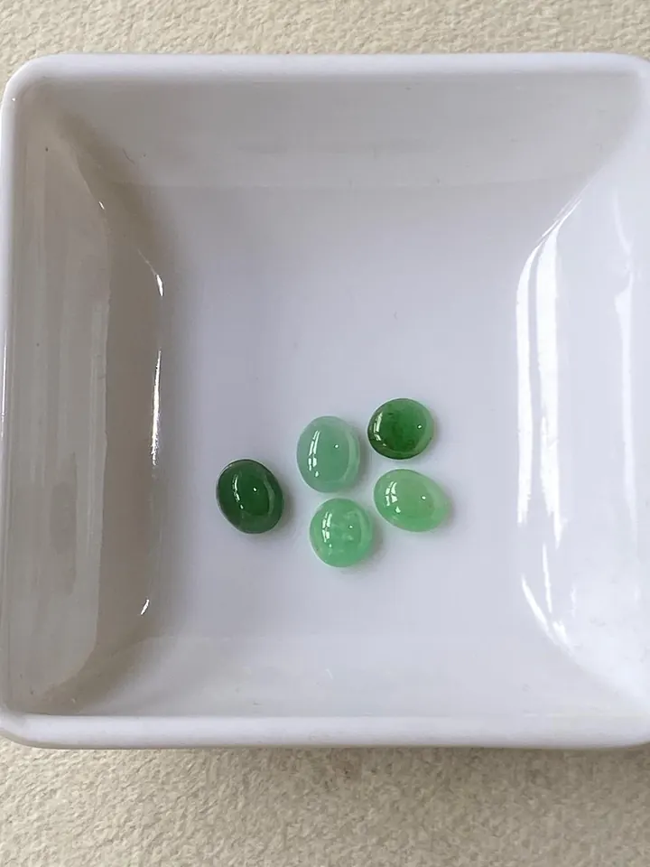

翡翠仿品大全：玻璃、石英岩與水沫子
翡翠的仿品像一場「偽裝者」大賽——玻璃最假、水沫子最像，學會看破綻，騙局就破功。

核心定義
翡翠的仿品（imitation）指「看起來像翡翠、其實是別的材質」：玻璃、石英岩、水沫子（鈉長石）、玉髓、葡萄石、蛇紋石（岫玉）等。仿品與 B/C 貨不同——B/C 貨主體還是翡翠，仿品根本是「別人」。
為什麼仿品猖獗？因為翡翠貴、而仿品成本極低（玻璃幾十元一公斤）——「看起來像」三個字，就夠騙人了。學會辨識仿品，是翡翠消費者的第一堂課。
特徵與分類
| 仿品 | 本質 | 比重 | 破綻 |
|---|---|---|---|
| 玻璃 | 矽酸鹽玻璃 | 約 2.5 | 氣泡、澆鑄紋 |
| 石英岩 | 石英質 | 約 2.65 | 粒狀結構、無棉絮 |
| 水沫子 | 鈉長石 | 約 2.6 | 太輕、無壓手感 |
| 玉髓 | 隱晶石英 | 約 2.6 | 蠟狀光、結構單一 |
| 蛇紋石 | 蛇紋石族 | 約 2.6 | 硬度低、易刮傷 |
水沫子是「最像翡翠」的仿品：它也有玻璃光澤、也能帶綠——但比重僅 2.6（翡翠 3.33），上手一掂「輕飄飄」就露餡；玻璃仿品則常有氣泡與澆鑄痕，放大鏡下無所遁形。
科學原理
辨識的核心是「物理常數」：比重（翡翠 3.33 壓手）、折射率（翡翠 1.66）、硬度（翡翠 6.5–7）——三項數據把玻璃、石英岩、鈉長石全數區分。手感是比重科學的直覺化。
結構是第二道防線：翡翠的粒狀纖維交織結構（放大鏡下可見）vs 玻璃的均質無結構、石英岩的粒狀、玉髓的隱晶——「結構」比「顏色」誠實得多。
鑑定與鑑別方法
- 掂比重：翡翠壓手、仿品輕飄
- 放大鏡：玻璃氣泡、石英岩粒狀、翡翠纖維
- 看光澤：翡翠玻璃光、玉髓蠟狀
- 查折射率：1.66 vs 1.5x
- 證書終審：確認 jadeite 或標示仿品
市場行情與保養建議
市場現況：仿品最常出現在旅遊區、直播間與低價攤位——「A 貨翡翠」掛牌賣玻璃、石英岩的案例層出不窮。價格異常低（遠低於行情）是第一警訊。
自保要點：認權威證書、學比重手感、避異常低價——三招齊備，九成仿品騙局可避。真翡翠的價格有其物理支撐，便宜到「不合理」就是最大的不合理。
常見誤區
染色石英岩、綠色玻璃都能「綠」——顏色是表象，比重、折射率、結構才是身分。看顏色買玉，是被騙的第一步。
水沫子比重 2.6 vs 翡翠 3.33——上手一掂就露餡。它不是看不出來，是沒人教你掂。
冷知識
中國古玩行把玻璃仿玉叫「料器」，明清時期就有——仿翡翠的歷史，比你想的長得多。
染色石英岩大量冒充緬甸翡翠——放大鏡下的粒狀結構與裂隙滲色，是它的身份證。
反直覺觀點
玻璃仿翡翠成本最低、賣相卻常最好——氣泡與澆鑄紋在放大鏡下明顯到可笑。騙子的成本越低，破綻反而越大。
比重手感零成本、隨時可用——老行家憑手感先篩一輪，儀器才針對「存疑者」。最有效的工具，往往最簡單。